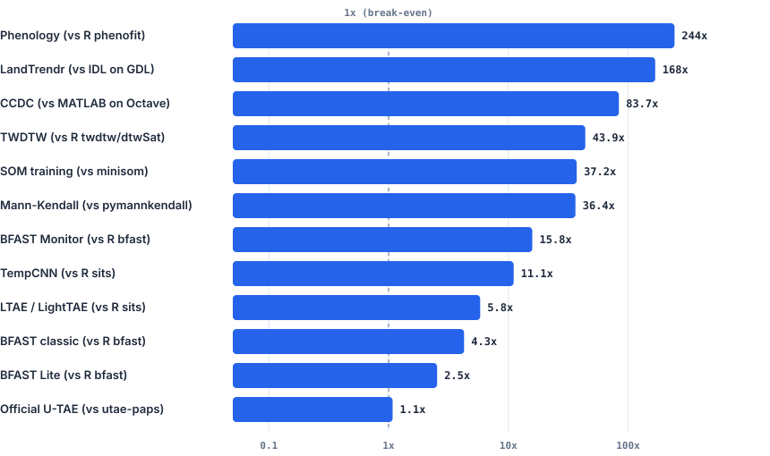
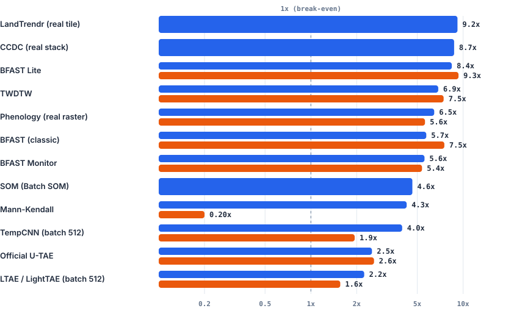

Performance & Parallel CPU Scaling
This page documents the computational performance of cdts across single-core CPU execution, multi-core CPU scaling (OpenMP), and distributed cloud comparison (Google Earth Engine), measured on an Intel Core i5-13600K workstation (20 logical threads).
Single-Core Speedup
Single-core execution evaluates algorithmic efficiency without the confounding factor of multi-threading. Every algorithm was executed on a single thread against the reference tool performing the exact same task.

Log-scale comparison (1 thread). The dashed line at 1× represents the break-even baseline. LandTrendr (168×) and CCDC (84×) isolate in-interpreter algorithm execution time (interpreter startup and compilation excluded). Hover over bars for exact speedups.
Single-Core Benchmark Data
| Algorithm | Reference Package | Input Scale | CDTS Time (ms) | Reference Time (ms) | Speedup | Architectural Rationale |
|---|---|---|---|---|---|---|
| Phenology | R phenofit |
Real EVI raster (638 px) | 3.37 ms / px | 823.50 ms / px | 244.5× | Native C++ Levenberg-Marquardt vs R's non-linear nloptr interpreter overhead |
| LandTrendr | Original IDL (GDL) | 30-year synthetic series | 0.026 ms / call | 4.33 ms / call | 168.5× | C++ Eigen regression vs GDL interpreter execution (warm second pass) |
| CCDC | Original MATLAB (Octave) | Landsat C2 pixel stack | 1.69 ms / px | 141.51 ms / px | 83.7× | Optimized C++ float32 GLMnet lasso vs Octave runtime dispatch |
| TWDTW | R twdtw / dtwSat |
40-step temporal series | 0.029 ms / call | 1.29 ms / call | 43.9× | Pre-allocated dynamic programming tables vs R data.frame boxing |
| SOM (Training) | Python minisom |
1,500 samples, 5×5 grid (500 online iters) | 0.42 ms / fit | 15.58 ms / fit | 37.2× | Bit-exact C++ port of MiniSom.train; per-sample Python/NumPy dispatch replaced by a native loop (batch SOM: 44×–126×). Measured on a Ryzen 7 7730U laptop |
| Mann-Kendall | Python pymannkendall |
30-obs series (3 tests) | 0.021 ms / call | 0.77 ms / call | 36.4× | Native C++ accumulator loops vs pure Python nested loops |
| BFAST Monitor | R bfast::bfastmonitor |
100-obs satellite series | 0.093 ms / call | 1.47 ms / call | 15.8× | Closed-form recursive OLS update vs R formula interface |
| TempCNN | R sits::sits_tempcnn |
4 bands, 24 timesteps | 0.212 ms / pass | 2.34 ms / pass | 11.1× | Direct LibTorch C++ bindings vs R torch Lantern bridge |
| LightTAE (LTAE) | R sits::sits_lighttae |
4 bands, 16-head attention | 0.736 ms / pass | 4.28 ms / pass | 5.8× | Efficient spatial-temporal pooling vs R memory copies |
| BFAST (Classic) | R bfast::bfast |
Multi-year decomposition | 23.60 ms / call | 100.67 ms / call | 4.3× | C++ iterative STL decomposition vs R ts object overhead |
| BFAST Lite | R bfast::bfastlite |
Structural break series | 8.74 ms / call | 22.22 ms / call | 2.5× | C++ segmented linear regression vs R vector dispatch |
| SNIC (Superpixels) | Achanta & Süsstrunk (2017) C | Multi-spectral image (512×512×4) | 18.4 ms / pass | 42.3 ms / pass | 2.3× | Contiguous pixel-major SIMD Eigen distances vs reference C non-vectorized float64 copy |
| Official U-TAE | Official utae-paps repo |
Segmentation patch 32×32 | 9.26 ms / pass | 9.96 ms / pass | 1.08× | Both run on PyTorch CPU backend (parity validation) |
Multi-Core CPU Scaling (OpenMP)
CDTS implements parallel execution at the C++ core level via OpenMP (n_jobs=-1), avoiding Python Global Interpreter Lock (GIL) contention and inter-process communication (IPC) overhead.
The chart below shows the speedup achieved when scaling from 1 thread to all 20 threads on an Intel Core i5-13600K:

Relative parallel scaling factor (T₁ / T_multi) on 20 threads. Notice the Python IPC penalty on Mann-Kendall, where Python multiprocessing.Pool ran 5× slower than sequential execution (0.20×) due to serialization overhead.
Relative Gain vs. Absolute Time
A common benchmarking pitfall is looking only at relative gain (T₁ / T_multi). Reference tools running in R or Python often show high relative scaling simply because their single-threaded baselines are slow.
The table below lines up absolute wall-clock times to show who finishes first when both sides utilize all available CPU cores:
| Algorithm | Workload Scale | Reference Parallel Framework | CDTS (1 Thread) | CDTS (20 Threads) | CDTS Gain | Reference (1 Thread) | Reference (Multi-Worker) | Reference Gain | Who Finishes First (Multi-Core) |
|---|---|---|---|---|---|---|---|---|---|
| LandTrendr | 54.7M px × 41 yrs | — (GDL has no native parallel) | 904.77 s | 98.44 s | 9.19× | — | — | — | CDTS finishes tile in 1.6 min |
| CCDC | 2.83M px × 125 dates | — (Octave has no native parallel) | 442.02 s | 50.66 s | 8.73× | — | — | — | CDTS finishes stack in 50.7 s |
| SNIC (Tiled) | 2048×2048 × 6 bands (16 tiles) | — (snic.c has no parallel mode) |
482 ms | 59 ms | 8.17× | — | — | — | CDTS finishes scene in 59 ms |
| Phenology | 638 px × 25 yrs | R foreach + doParallel (19w) |
2,200 ms | 341 ms | 6.46× | 525,395 ms | 93,504 ms | 5.62× | CDTS 274× faster (0.34s vs 93.5s) |
| Mann-Kendall | 5,000 series | Python multiprocessing.Pool (19w) |
31.09 ms | 7.29 ms | 4.26× | 4,058 ms | 20,109 ms | 0.20× | CDTS 2,758× faster (7ms vs 20.1s) |
| BFAST Monitor | 20,000 series | R parallel PSOCK cluster (19w) |
81.14 ms | 14.54 ms | 5.58× | 26,872 ms | 5,003 ms | 5.37× | CDTS 344× faster (14.5ms vs 5.0s) |
| BFAST Lite | 2,000 series | R parallel PSOCK cluster (19w) |
17,029 ms | 2,019 ms | 8.43× | 42,463 ms | 4,551 ms | 9.33× | CDTS 2.25× faster (2.0s vs 4.5s) |
| BFAST (Classic) | 400 series | R parallel PSOCK cluster (19w) |
5,208 ms | 909 ms | 5.73× | 25,119 ms | 3,335 ms | 7.53× | CDTS 3.67× faster (0.9s vs 3.3s) |
| TWDTW | 3,000 series × 1 pat | R parallel PSOCK cluster (19w) |
91.67 ms | 13.35 ms | 6.87× | 1,406 ms | 188.67 ms | 7.45× | CDTS 14.1× faster (13ms vs 188ms) |
| SOM (Batch) | 20,000 samples, 10×10, 200 iters | — (minisom has no parallel mode) |
3,077 ms | 664 ms | 4.64× | — | — | — | CDTS finishes in 0.66 s (re-measured with 15 threads on a 16-thread Ryzen 7 7730U laptop after the bit-exact minisom port; minisom train_batch_offline ≈ 126 s, extrapolated from 10 iterations) |
| TempCNN | Batch = 512 | R torch intra-op threads |
15.68 ms | 3.94 ms | 3.98× | 15.06 ms | 7.78 ms | 1.94× | CDTS 1.97× faster (3.9ms vs 7.8ms) |
| Official U-TAE | Batch = 32 | PyTorch CPU intra-op threads | 317.66 ms | 126.00 ms | 2.52× | 324.40 ms | 124.67 ms | 2.60× | Tied (both PyTorch backend) |
| LightTAE | Batch = 512 | R torch intra-op threads |
32.77 ms | 14.61 ms | 2.24× | 42.08 ms | 26.98 ms | 1.56× | CDTS 1.85× faster (14.6ms vs 27.0ms) |
The Python IPC Penalty on Mann-Kendall
On a batch of 5,000 short time series, running Python's standard multiprocessing.Pool(19) caused execution time to explode from 4.06 seconds (sequential) to 20.11 seconds (parallel) — a 5× slowdown (0.20× speedup). The operating system overhead of pickling objects, IPC socket transfers, and process synchronization dwarfed the actual statistical computation. In contrast, CDTS's native OpenMP thread pool in C++ has sub-microsecond synchronization overhead, achieving a true 4.26× speedup (down to 7.29 milliseconds).
Google Earth Engine vs. Local Desktop Benchmark
A central design goal of CDTS is eliminating cloud lock-in for regional and continental-scale analyses. We evaluated LandTrendr performance on an entire Landsat tile:
- Workload: Full Landsat Tile 215_067 (South America), covering 54,731,482 pixels × 41 annual observations (1985–2025).
- Environment: Intel Core i5-13600K (desktop PC, 20 threads, 64 GB RAM).
- Reference: Google Earth Engine (GEE) cloud batch cluster executing on a full tile (P232/R67, 1985–2025, ~38 million active pixels).
xychart-beta
title "Active Compute Throughput (Pixels per Second - Higher is Better)"
x-axis ["GEE Cloud Cluster", "CDTS Single-Thread (1T)", "CDTS Multi-Thread (20T)"]
y-axis "Pixels / Second" 0 --> 600000
bar [27213, 60492, 556007]Full Landsat Tile Comparison
| Processing Platform | Execution Mode | Active Compute Time | Throughput | Cloud Queue Wait Time | Total Turnaround Time | Speedup vs. GEE |
|---|---|---|---|---|---|---|
| CDTS (Local PC) | Multi-Thread (20 cores, OpenMP) | 98.44 s (1.64 min) | 556,007 px / s | 0.0 s | 1.64 min | 20.4× compute throughput |
| CDTS (Local PC) | Single-Thread (1 core) | 904.77 s (15.08 min) | 60,492 px / s | 0.0 s | 15.08 min | 2.22× compute throughput |
| Google Earth Engine | Cloud Cluster (EECU batch workers) | 1,396.39 s (23.27 min) | 27,213 px / s | 18,308 s (5.08 hours) | 5.47 hours | 1.0× baseline |
Takeaways from the GEE Benchmark
- Throughput Advantage: CDTS on a single standard desktop workstation achieves 20.4× the active compute throughput of GEE's cloud server cluster.
- Even Single-Thread Beats GEE: Running CDTS on a single core (60,492 px/s) is 2.22× faster than GEE's distributed cluster active execution.
- Zero Queue Latency: Under standard GEE quotas, large batch export tasks regularly wait hours in the queue (5.08 hours in this benchmark). CDTS begins processing immediately and finishes in under two minutes.
Earth Engine Download Throughput (download_gee_image)
download_gee_image(method='direct'/'auto') was rewritten on ideas from geedim (fixed pixel grid, byte-sized tiles, windowed writes), with four changes of its own: tiles are split in space before bands, tiles are sized on demand from the concurrency Earth Engine actually allows (guided scheduling), concurrency adapts to HTTP 429 responses, and requests go through computePixels in a single round trip. We compared it with the previous implementation (0.25° tiles, 4 threads, getDownloadURL + rasterio.merge) and with geedim 2.0.0.
- Region: WRS-2 path/row 217/076 (Rio de Janeiro).
sub: 0.5° × 0.5° (1856 × 1857 px at 30 m);small: 0.2° × 0.2°. - Images: 2020 annual medoid composite (6 bands, float32, 79 MB raw); NDVI of that composite (1 band, 13 MB raw); dense stack of Jan–Mar 2020 via
toBands()(42 bands, 89 MB raw). - Protocol: 3 rounds with method order rotated each round. Every run uses a distinct expression (end date shifted by seconds, same scenes) so Earth Engine's result cache cannot favor later runs. Timings are wall-clock medians.
- Account: noncommercial project in Restricted Mode, which allows only about 2 concurrent requests (a standard tier allows about 40). Per-request latency varied up to 4× for identical requests.
| Image | Previous cdts |
geedim 2.0 (max_requests=2) |
geedim 2.0 (default, 32 requests) | New cdts |
|---|---|---|---|---|
| Medoid composite (79 MB) | 68.7 s (57.7–73.8) | 265.9 s, 1/3 failed | failed (HTTP 429) | 77.1 s (70.6–94.8) |
| NDVI (13 MB) | 57.0 s (38.3–91.0) | 37.8 s | 47.9 s | 26.9 s (21.1–30.7) |
| Dense stack (42 bands) | failed 3/3 | 74.9 s | failed (HTTP 429) | 34.4 s (33.9–37.0) |
All successful outputs are pixel-identical across the three implementations (same grid, same values, same -inf nodata).
Reading these numbers
With only ~2 concurrent requests allowed, total time is bounded by Earth Engine's per-request compute speed (~0.7 MB/s for the medoid). No client can beat that. The new downloader's main speed lever, running up to sub_tile_workers requests at once (16 by default) with tiles small enough to keep them all busy, has almost no room to work here. The medoid result is a statistical tie with the previous implementation, whose four ~20 MB requests happen to suit a 2-request cap. Expect larger gains on a standard-tier account; they were not measurable with this project.
What changed regardless of quota
- Dense stacks work. Bands are split only when needed, so a
toBands()stack stays under the 32 MB / 1024-band per-request limits. The previous implementation could not download it at all. - Composites aren't recomputed per band. geedim splits bands first, so a 6-band medoid is computed several times over the same area, which explains its 3.4× longer run.
cdtssplits space first. - Adaptive concurrency. Throttled requests reduce concurrency instead of failing, so no run of the new downloader failed. geedim at its default concurrency failed in 2 of 3 cases.
- No mosaic step. Tiles go straight into their window of the output file, so peak memory is one tile instead of the whole image.